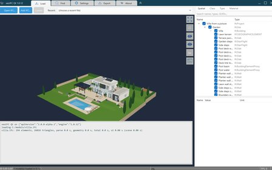
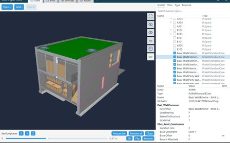
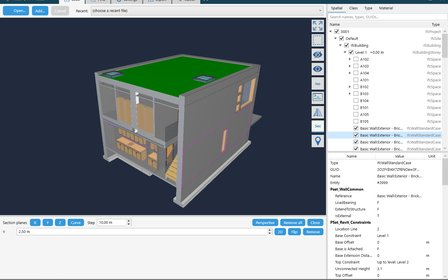
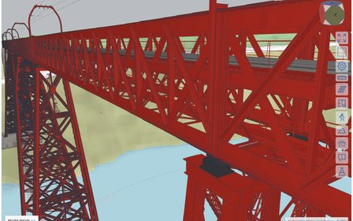

WebAssembly viewer for the browser
Explore the Viadotto Acerno bridge in xeoIFC Web. See how the WebAssembly library loads models, renders them, picks elements and queries their properties.
Viewers, integrations and models built on xeoIFC. Choose an example to try it and read how it works.
Explore the Viadotto Acerno bridge in xeoIFC Web. See how the WebAssembly library loads models, renders them, picks elements and queries their properties.
Load IFC and IFCZIP files directly into a xeokit viewer with the xeoIFC loader plugin, without a server-side conversion step.

A desktop IFC viewer built on the native xeoIFC library. Explore its API calls, load-time measurements and integration with Qt.

A desktop IFC viewer in Rust on the native xeoIFC library, without Qt. See how a gpui window hosts the 3D view of the library, and the library calls in Rust.

A desktop IFC viewer in C# on the native xeoIFC library, with the features of the Qt viewer. See how a WPF window hosts the 3D view of the library, and the library calls in C#.
Choose a platform and start with an integration recipe: browser, xeokit, C, C# or Python. Find the library packages and a guide to the shared document API.

Inspect the detailed IFC reconstruction of Eiffel's viaduct, from its steel plates and connections to the surrounding terrain.
A furnished villa, pool, garden and terrain generated as IFC by a script. Compare the model with the picture and follow the authoring example.